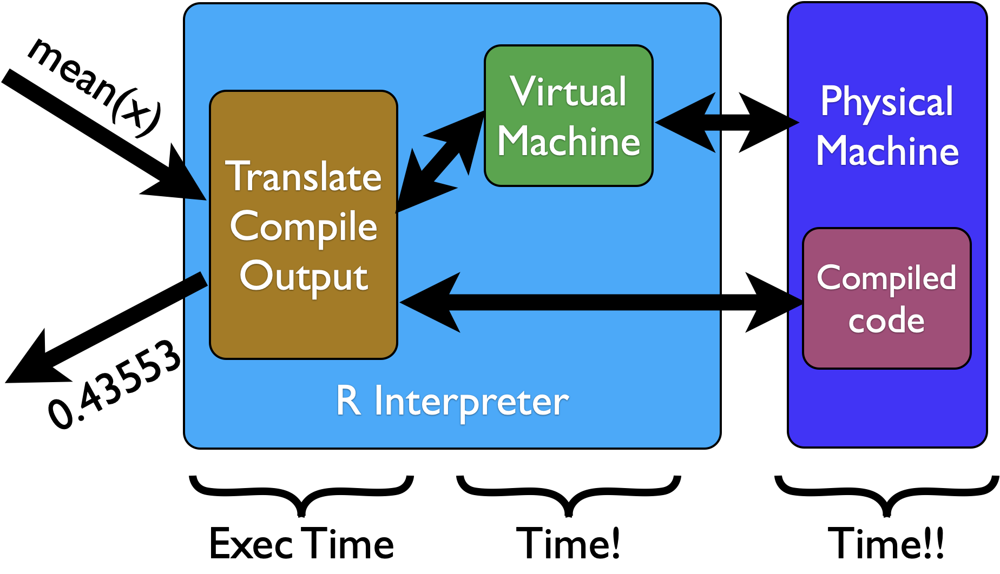

Statistical
Computing
Calling C++
Xi (Rossi) LUO
Department of Biostatistics and Data Science
School of Public Health
The University of Texas Health Science Center at Houston
R System
Time spent outside computing in R
Compiled Programs
No middle part (compile/interpret) to waste time
Core R

Example
Run the following in terminal
docker run -ti --rm -v "$PWD":/root -w /root -u root r-base /bin/bash
Then check you can see the cpp file admm_lasso.cpp
root@0a42fd60ff43:~# ls
C++ Header
#include
// [[Rcpp::depends(RcppArmadillo)]]
arma::colvec soft_thresh(arma::colvec x, double tau) {
int p = x.n_rows;
return( arma::sign(x)%arma::max(arma::zeros(p), arma::abs(x) - tau ) );
}
// [[Rcpp::export]]
arma::colvec admm_lasso(arma::mat X, arma::colvec y, double tau, int maxit, double tol) ...
C++ Core
#include
// [[Rcpp::depends(RcppArmadillo)]]
arma::colvec soft_thresh(arma::colvec x, double tau) {
int p = x.n_rows;
return( arma::sign(x)%arma::max(arma::zeros(p), arma::abs(x) - tau ) );
}
// [[Rcpp::export]]
arma::colvec admm_lasso(arma::mat X, arma::colvec y, double tau, int maxit, double tol) {
arma::mat XX = X.t() * X;
arma::mat Xy = X.t() * y;
int p = X.n_cols;
arma::colvec lambda = arma::zeros(p);
//double maxRho = 5.0;
double rho = 4.0;
arma::colvec z0 = arma::zeros(p);
arma::colvec z = arma::zeros(p);
arma::colvec beta0 = arma::zeros(p);
arma::colvec beta = arma::zeros(p);
arma::mat Sinv = arma::inv( XX + arma::eye(p, p) * rho );
for (int i = 1; i <= maxit; i++ ) {
beta = Sinv * (Xy + rho * z - lambda);
z = soft_thresh(beta + lambda * (1/rho), tau * (1/rho) );
lambda = lambda + rho * (beta - z);
double change = std::max(arma::norm(beta - beta0, 2), arma::norm(z - z0, 2));
if (change < tol || i > maxit ) {
break;
}
beta0 = beta;
z0 = z;
}
return(z);
}
Install Pkgs
install.packages("Rcpp")
install.packages("RcppArmadillo")
install.packages("glmnet")
Simulate Data
n <- 50
p <- 400
set.seed(100)
X <- matrix(rnorm(n*p), n, p)
b <- rep(0, 400)
b[301:305] <- c(5:1)*2
y <- X%*%b + rnorm(n)
Compile C++
library(Rcpp)
library(RcppArmadillo)
sourceCpp("admm_lasso.cpp")
admm_lasso
function (X, y, tau, maxit, tol)
.Call(<pointer: 0x7f18d74485a0>, X, y, tau, maxit, tol)
<bytecode: 0x55ce6c88d358>
Note: an R function admm_lasso was expored to R from C++ using the same name
Compare with glmnet
system.time(re.cpp <- admm_lasso(X, y, 1*n, 1000, 1e-4))
user system elapsed
0.039 0.014 0.013
system.time(fit <- glmnet(X, y, lambda = 1, standardize = F, intercept = F))
user system elapsed
0.017 0.000 0.026
re.glmnet <- as.numeric( coef(fit) )[-1]
obj(re.glmnet, X, y, 1*n)
1300.847
obj(re.cpp, X, y, 1*n)
1300.848
max(abs( re.glmnet - re.cpp ))
0.007784352
Small difference in beta
References
- AoRP: ch 14